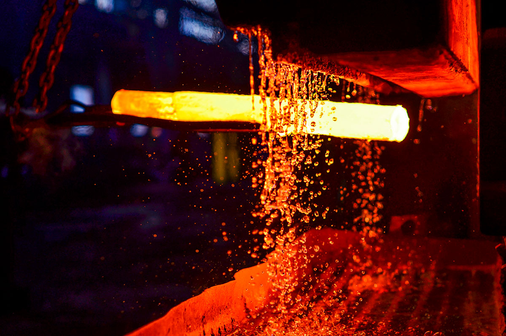
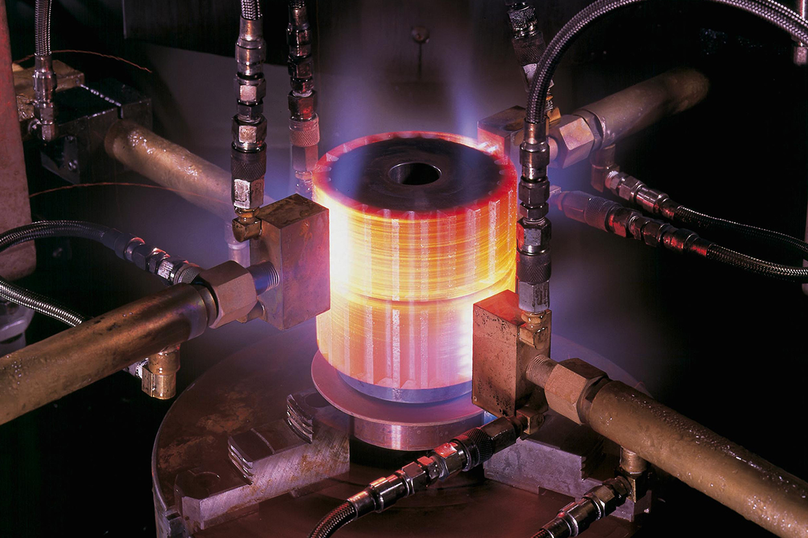
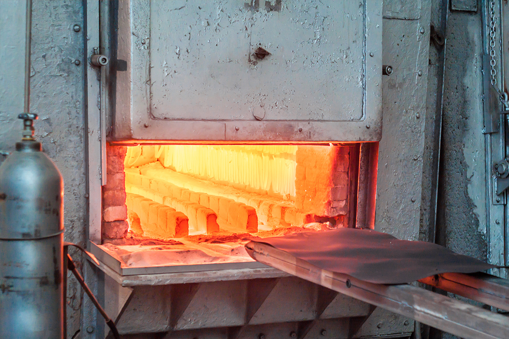
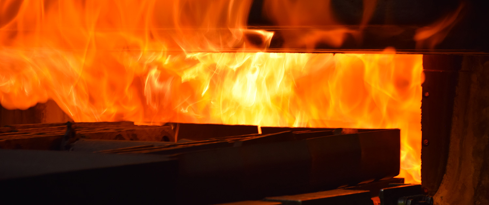

PRESSLER Experiencia, tecnología y compromiso para la industria Metalúrgica Argentina desde 1959.
PROCESOS TERMICOS ESPECIALIZADOS
TRATAMIENTOS TERMICOS
Optimizamos las propiedades de las piezas metálicas mejorando su dureza, resistencia y durabilidad, con trazabilidad y calidad garantizadas en cada etapa.
Austempering
Tratamiento isotérmico que mejora la tenacidad y reduce distorsiones en aceros de medio y alto carbono
Martempering
Proceso que reduce tensiones internas y riesgos de agrietamiento, manteniendo alta dureza
Temple y Revenido
Aumento de dureza seguido de un revenido para mejorar la resistencia a impactos y la estabilidad
Nitrurado
Incremento de dureza superficial sin deformación estructural, ideal para componentes sometidos a desgaste
Bonificado
Combinación de temple y revenido con características mecánicas equilibradas para piezas estructurales
Distensionado
Eliminación de tensiones internas acumuladas por mecanizado o soldadura
Oxidacion controlada
Tratamiento superficial para mejorar la resistencia a la corrosión y la fricción
Recocido
Mejora la maquinabilidad y estabilidad dimensional del material
Normalizado
Proceso para homogenizar estructura interna y mejorar propiedades mecánicas
Cementado
Endurecimiento superficial con núcleo tenaz, ideal para componentes de alta fricción
Carbonitrurado
Tratamiento termoquímico para mejorar dureza superficial y resistencia al desgaste
TRATAMIENTOS PARA MOLDES DE INYECCION DE ALUMINIO Y MATRICES
Procesos diseñados para aumentar la vida útil de moldes y matrices, con precisión térmica y mínima deformación.
Nitrurado
Distensionado inicial
Temple y triple revenido
Oxidacion controlada
Ensayos metalograficos
Distensionados de mantenimiento
LABORATORIO PROPIO
Contamos con un laboratorio técnico totalmente equipado para
Ensayos de dureza
Estudios metalograficos
Inspeccion de microestructura
Seguimiento termico con termopares
Cumplimos normas técnicas nacionales e internacionales, incluyendo ISO 9001 (Gestión de la calidad), procesos en atmósfera controlada y estrictos controles internos para garantizar resultados consistentes.
CALIDAD
En Pressler Tratamientos Térmicos trabajamos bajo estrictos controles de calidad, garantizando procesos trazables, repetibles y validados según normas nacionales e internacionales. Combinamos atención personalizada con tecnología de vanguardia, asegurando la durabilidad de cada componente tratado.
Cumplimiento de la norma ISO 9001
Procesos sustentables y responsables con el medio ambiente
Tecnología actualizada y controlada en tiempo real
Controles aplicados:
Ensayos metalograficos
Ensayos de dureza (Rockwell, Brinell, Vickers)
Seguimiento termico con termopares
Control dimensional
Trazabilidad por lote y pieza
CLIENTES
SIEMPRE AL SERVICIO DE LA INDUSTRIA ARGENTINA
"Enfocados en impulsar la excelencia de su producción, ofrecemos soluciones especializadas para industrias clave como la automotriz, proveyendo moldes y matrices de alta precisión para fundición de aluminio e inyección de plástico. Servimos también a los sectores petroquímico y energético, al ferroviario con componentes esenciales, a la aeronáutica y defensa con piezas para mantenimiento y reparación, a la exigente industria de herramientas y aceros especiales, y a la agrícola y de maquinaria pesada con componentes diseñados para resistir el desgaste y las cargas mecánicas más demandantes. Nuestra experiencia y tecnología están al servicio de sus desafíos industriales."
NOSOTROS
Desde 1959, Pressler ha evolucionado con una visión clara: ofrecer tratamientos térmicos de excelencia. Fundada en Lanús Oeste, la empresa ha crecido de forma sostenida incorporando tecnología de vanguardia, ampliando su infraestructura y desarrollando procesos con trazabilidad y control de calidad.


En los años 70 modernizamos nuestra planta y nos convertimos en pioneros en el uso de gas natural para nuestros hornos, mejorando la eficiencia y el compromiso ambiental. Durante las décadas siguientes, sumamos hornos especializados, equipos de cementación gaseosa y un laboratorio metalográfico de alta precisión, logrando importantes homologaciones, como la de Renault Argentina.


En 2007 obtuvimos la certificación ISO 9001, reafirmando nuestro compromiso con la calidad. Más de seis décadas de trayectoria nos respaldan. Esta es nuestra historia. Esta es nuestra base.
NUESTRA LINEA TEMPORAL
CONTACTO
 Dirección: Máximo Paz 1145, Lanús Oeste, Buenos Aires, Argentina
Dirección: Máximo Paz 1145, Lanús Oeste, Buenos Aires, Argentina Teléfonos/Fax: (011) 4262-3153 / 3945 / 3197
Teléfonos/Fax: (011) 4262-3153 / 3945 / 3197 Email: administracion@juanpressler.com
Email: administracion@juanpressler.com Horario de atención: Lunes a viernes de 8:30 a 17:30 hs
Horario de atención: Lunes a viernes de 8:30 a 17:30 hs